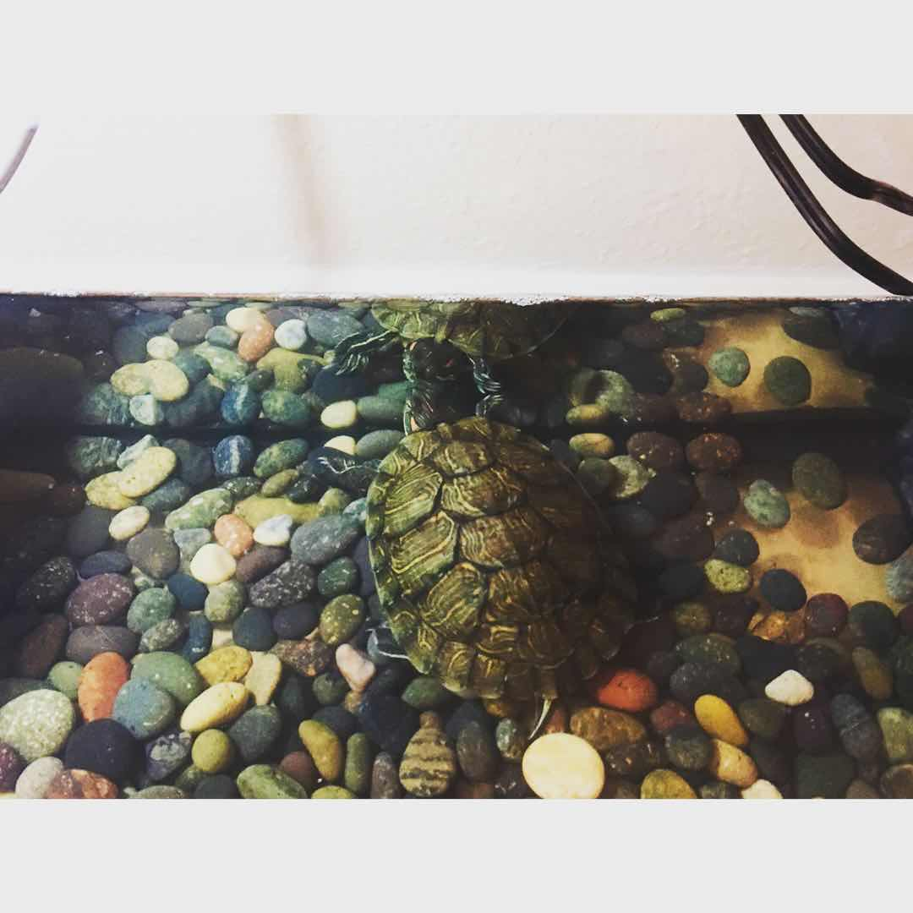

I got my one-month-old red-eared turtle from PetSmart yesterday and learned a lot from the staff there. Keeping a pet turtle actually needs more work and preparation than I initially expected. Here is a summary of the things I learned and I believe everyone should know when considering having a pet turtle.
A red-eared turtle and other popular turtle species can usually grow up to 12 inches and will need a water tank of at least 40 gallons (36 3/16 x 18 1/4 x 16 15/16 inches) which may take up quite some space for people living in small apartments like me.
Turtles need to be exposed to enough UVB every day to stimulate the growth of their bones and shells. A wild turtle would naturally get them by basking under the sun. However, an indoor turtle would need to have a dedicated light to generate UVB for them. In winter, it is usually better to have a heat light in addition to the UVB light in order to create the suitable basking temperature for the turtles.
Another essential is the water cleaner. It is used to keep the water clean and the turtle healthy. I would also recommend getting a pump or a water tank with a drain since it is necessary to change the water weekly.
It is better to take these things into account when considering buying a turtle. It may be more work than expected. Luckily, it is likely that we can get all those accessories from a pet store for under 100 dollars.
Lastly, a photo of my baby turtle exploring its new home.
